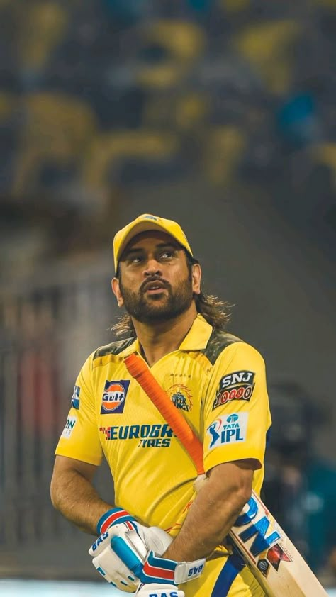
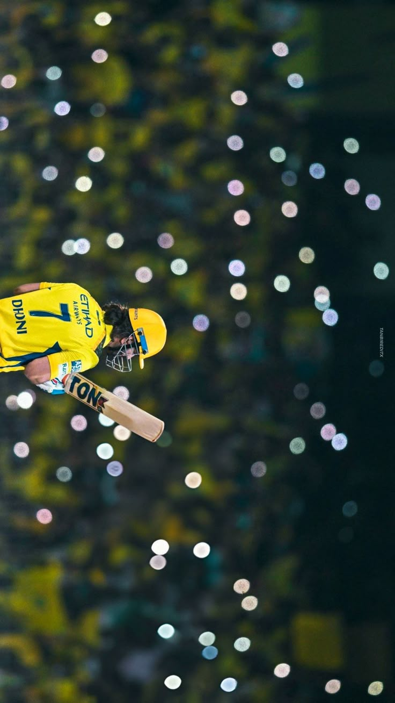
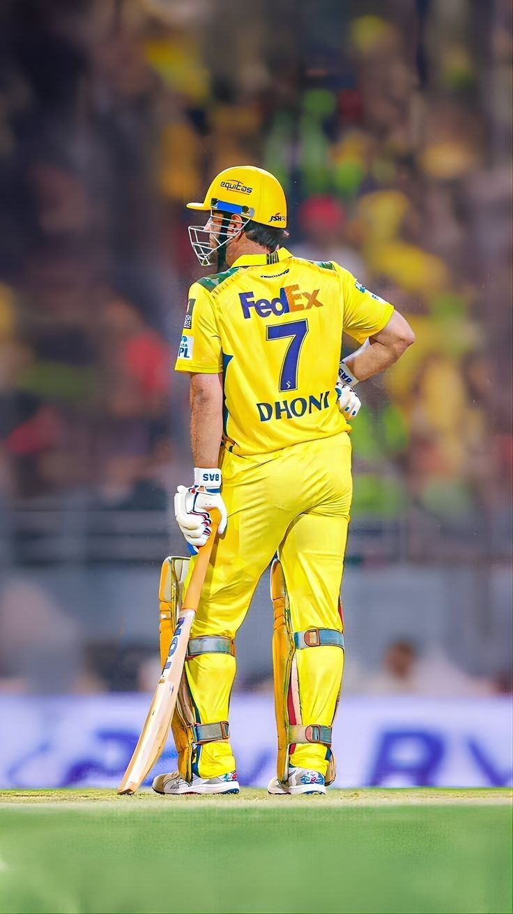

Born: 7 July 1981 (age 44 years), Ranchi
Awards: Padma Bhushan
Spouse: Sakshi Dhoni (m. 2010)
Dates joined: 2018 (Chennai Super Kings)
Siblings: Narendra Singh Dhoni, Jayanti Gupta
Parents: Pan Singh Dhoni, Devaki Devi
Mahendra Singh Dhoni, fondly known as Captain Cool, is one of India’s most iconic cricketers and leaders. Born on July 7, 1981, in Ranchi, Jharkhand, Dhoni rose from humble beginnings to become the captain who led India to historic victories, including the 2007 ICC T20 World Cup, the 2011 ICC Cricket World Cup, and the 2013 ICC Champions Trophy. Renowned for his calm demeanor under pressure, sharp wicket-keeping skills, and explosive batting, Dhoni redefined leadership in cricket. Beyond the field, he has been honored with prestigious awards such as the Padma Shri, Padma Bhushan, and the Rajiv Gandhi Khel Ratna. His journey from a small-town boy to a global sporting legend continues to inspire millions across the world

Mahendra Singh Dhoni, the heartbeat of the Chennai Super Kings (CSK), has been an integral part of the Indian Premier League since its inception in 2008. Known as Thala by fans, Dhoni has captained CSK to five IPL titles, cementing the team’s reputation as one of the most successful franchises in the league. Over his IPL journey, he has played more than 275 matches, scored over 5,000 runs, and effected nearly 200 dismissals as a wicketkeeper. While his batting role has evolved with time, his unmatched ability to finish games and his calm, tactical leadership continue to inspire teammates and fans alike. For CSK, Dhoni is not just a player—he is the symbol of consistency, resilience, and championship spirit
